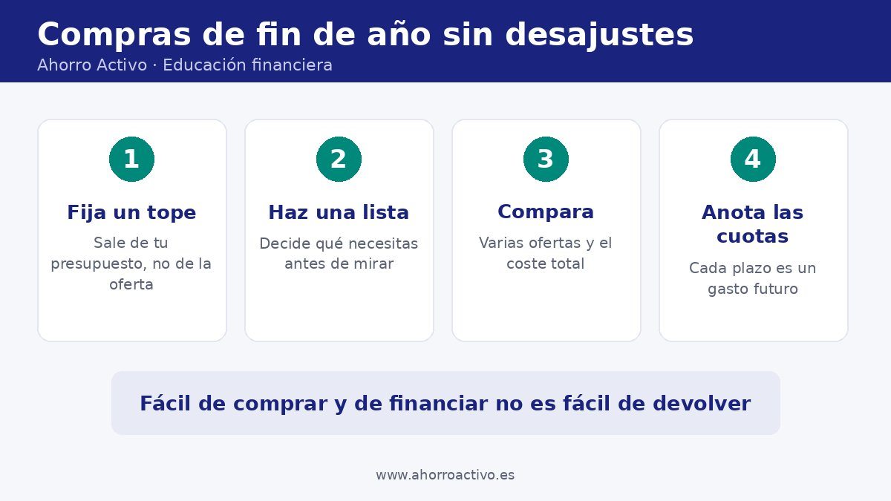

Por David Finanzas
Educación financiera |
Black Friday y Navidad: cómo comprar sin desajustar tu presupuesto
Entre el Black Friday, el Cyber Monday, las compras de Navidad y las rebajas, los últimos meses del año concentran mucho gasto. Con ofertas en cada pantalla y pagos que se hacen con un toque, es fácil perder la cuenta de lo que se compra.
Esta guía propone cuatro pasos para comprar con cabeza, un ejemplo con cifras inventadas y los puntos que el Banco de España recomienda revisar antes de financiar una compra. Es contenido divulgativo: no recomienda ninguna tienda, producto ni entidad.

Paso 1: fija un tope antes de mirar ofertas
El Banco de España aconseja, para estas fechas, elaborar un presupuesto con un límite de gasto. Mira cuánto margen tienes en la partida de gastos discrecionales de tu presupuesto mensual y no lo superes. Si lo necesitas, usa la calculadora de presupuesto para ver ese margen.
Paso 2: decide qué necesitas
Haz una lista de lo que de verdad quieres o necesitas comprar antes de entrar en las webs de ofertas. Una práctica habitual es apuntar también el precio que esperabas pagar, para saber si el descuento merece la pena. Todo lo que no esté en la lista y te tiente por impulso, apúntalo y espera un día antes de decidir.
Paso 3: compara ofertas y coste total
- Compara varias ofertas antes de contratar o comprar, también el coste de envío y las condiciones de devolución.
- Si financias, mira el coste completo: intereses, comisiones, número e importe de las cuotas y derecho de desistimiento.
- Compara con la TAE, que incluye intereses, comisiones y gastos, y no solo con el tipo nominal (TIN).
- Compra con seguridad en internet: si pagas con tarjeta, comprueba que la página es segura.
Paso 4: anota cada cuota futura
En las compras a plazos puede que no se cobren intereses, pero sí una comisión, que suele incluirse en la primera cuota. Finanzas para Todos recuerda además que una financiación "sin intereses" no tiene coste cero. Apunta cada cargo futuro en tu presupuesto como un gasto más.
Ejemplo ilustrativo con cifras inventadas
Imagina un tope de compras de fin de año de 300 €. Los importes son un ejemplo para entender el método, no una referencia de lo que debe gastar nadie.
| Compra de la lista | Importe previsto |
|---|---|
| Regalo 1 | 90 € |
| Regalo 2 | 80 € |
| Prenda de abrigo | 120 € |
| Total previsto | 290 € (queda un margen de 10 €) |
Si aparece una oferta que no estaba en la lista, solo entra si cabe en el margen o si sustituye a otra compra. Y si decide pagar un artículo de 120 € en tres cuotas de 40 € más una comisión de 6 € (inventada) en la primera, el coste real son 126 €, no 120 €: ese dato también cuenta para el tope.
Cuidado con el efecto acumulado de las cuotas
Muchas pequeñas cuotas suman. Antes de aceptar otra, comprueba cuánto de tus ingresos se va ya en deudas con la calculadora de endeudamiento; la referencia que recoge Finanzas para Todos es no superar el 35-40 % de los ingresos. Tienes el método completo en Cuánta deuda es demasiado.
Errores comunes
- Comprar algo solo porque tiene descuento, sin necesitarlo.
- Mirar la cuota mensual y no el coste total.
- Olvidar los gastos de envío, comisiones o devoluciones.
- Pagar a plazos varias compras pequeñas sin sumarlas.
- No dejar margen para los gastos hormiga de las fiestas.
Preguntas frecuentes
¿Es buena idea comprar a plazos sin intereses? Puede serlo si de verdad no hay coste y encaja en tu presupuesto, pero revisa si hay comisión y suma las cuotas a tus gastos futuros. Si no puedes pagarlo hoy, valora si te hace falta ahora.
¿Cómo sé si un descuento es real? Compara el precio con varias tiendas y con el que esperabas pagar antes de la campaña, apuntado en tu lista.
¿Qué hago si ya me he pasado del tope? Recorta otros gastos discrecionales del mes y evita financiar la diferencia. Si te cuesta llegar a fin de mes, valora hablar con tu entidad o consultar a un profesional.
Fuentes y más información
- Banco de España – Planifica tus compras para evitar caer en el sobreendeudamiento: consejos para las compras de fin de año.
- Finanzas para Todos – ¿Cómo gestionar mis deudas?: TAE, comisiones y referencia del 35-40 %.